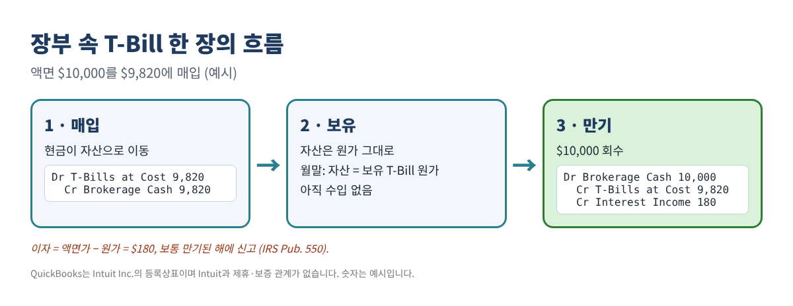
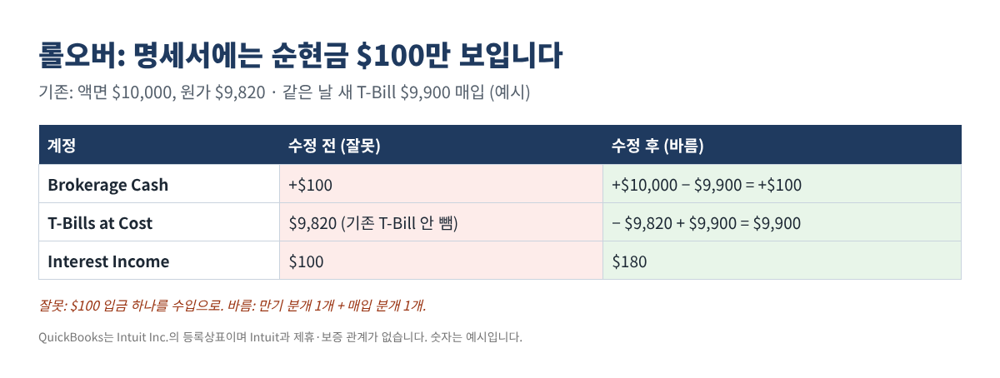
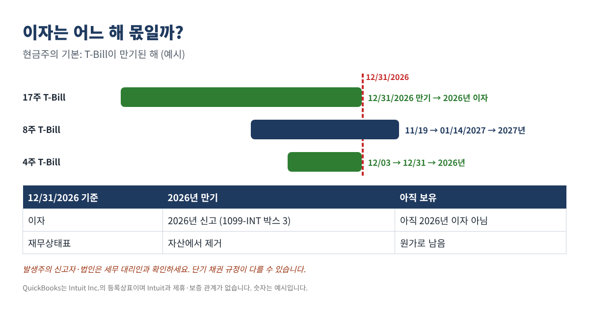

QuickBooks에서 T-Bill·머니마켓 펀드 기록하는 법: 원가와 이자 나누기부터 1099 대조까지
요즘은 남는 사업 자금을 증권사의 T-Bill(미국 단기 국채)이나 머니마켓 펀드에 넣어 두는 사업체가 많습니다. 돈은 안전하지만 장부는 엉키기 쉽습니다. T-Bill은 할인된 가격에 사서 만기에 액면가를 받기 때문에 '이자 입금'이 따로 보이지 않기 때문입니다. 그래서 매입 금액을 비용으로 잡거나, 만기에 돌아온 $10,000 전체를 수입으로 잡거나, 롤오버 때 남은 작은 순현금을 수입으로 잡는 일이 자주 생깁니다. 그러면 손익이 틀리고, 재무상태표가 증권사 명세서와 안 맞고, 연말 1099와도 맞지 않습니다.
이 글은 QuickBooks Desktop과 Online에서 그대로 따라 할 수 있는 방법과, 엑셀·구글 시트로 직접 만드는 간단한 기록표를 정리했습니다.
T-Bill 분개의 세 가지 원칙
- 이자 = 액면가 − 매입 원가. IRS Publication 550은 할인 가격과 만기 액면가의 차이를 이자 소득으로 봅니다.
- 시기. Pub. 550에 따르면 보통 만기에 지급될 때 이자를 신고합니다. 2026년 11월에 사서 2027년 1월에 만기되는 T-Bill은 보통 2027년 이자입니다.
- T-Bill 매입은 비용이 아닙니다. 현금이 다른 자산으로 옮겨 갈 뿐이고, 할인 금액만 수입이 됩니다.
세금과 관련해 두 가지를 기억하세요. 증권사는 국채 이자를 Form 1099-INT 박스 3에 보고하며, 이 이자는 연방 소득세 대상이지만 주·지방 소득세는 면제입니다 (Pub. 550). 머니마켓 펀드 분배금은 보통 이자가 아니라 배당이므로 (Pub. 550) 대개 Form 1099-DIV에 나옵니다.

1단계: 계정을 한 번만 만들어 두기
| 계정 (예시 이름) | 유형 | 용도 |
|---|---|---|
| Brokerage Cash | Bank | 증권사 현금·스윕 잔액 |
| T-Bills at Cost | Other Current Asset | 보유 중 T-Bill (매입 원가) |
| Interest Income - US Treasury | Other Income | 만기 때 할인 금액 (이자) |
| Dividend Income - MMF | Other Income | 머니마켓 펀드 분배금 |
QuickBooks Online
- All apps → Accounting → Chart of accounts → New account로 들어갑니다. (화면에 All apps가 없으면 Accounting 또는 Settings 메뉴에서 Chart of accounts를 여세요.)
- Account name을 입력하고 Account type을 먼저 고른 뒤, 아래 나타나는 목록에서 Detail type을 고릅니다. Save를 누릅니다.
QuickBooks Desktop
- Lists → Chart of Accounts → Account → New. 표처럼 Bank, Other Current Asset, Other Income 유형을 씁니다. 데스크톱을 오래 써 오신 분께는 익숙한 화면입니다.
2단계: 매입과 만기 기록하기
예시: 액면 $25,000인 13주 T-Bill을 $24,770에 샀습니다.
| 날짜 | 계정 | 차변 | 대변 |
|---|---|---|---|
| 매입일 | T-Bills at Cost | $24,770.00 | |
| 매입일 | Brokerage Cash | $24,770.00 | |
| 만기일 | Brokerage Cash | $25,000.00 | |
| 만기일 | T-Bills at Cost | $24,770.00 | |
| 만기일 | Interest Income - US Treasury | $230.00 |
숫자는 예시입니다.
- Online: + Create → Journal entry. 줄마다 계정을 고르고 Debits 또는 Credits에 금액을 넣은 뒤 Save and close. 차변 합계와 대변 합계가 같아야 저장됩니다.
- Desktop: Company → Make General Journal Entries.
- 사업용 체킹에서 증권사로 돈을 보내는 것은 비용이 아니라 이체입니다: Online + Create → Transfer / Desktop Banking → Transfer Funds.
은행 피드가 연결되어 있다면 내려받은 줄을 새로 추가하지 말고, 이미 입력한 분개나 이체에 Match하세요. 두 번 추가하면 현금이 두 배가 됩니다.
3단계: 롤오버는 분개 두 개로
만기 당일 새 T-Bill을 사면 명세서에는 작은 순금액 하나만 보이기도 합니다. 그래도 기존 T-Bill의 만기와 새 T-Bill의 매입을 각각 기록해야 이자가 정확해집니다.

4단계: 엑셀·구글 시트로 기록표 만들기
한 줄에 T-Bill 하나씩 적습니다. 열: A 이름, B 매입일, C 만기일, D 액면가, E 매입 원가. J1 셀에 기준일(예: 12/31/2026), J2 셀에 세금 연도를 넣습니다.
- F2 이자:
=D2-E2 - G2 신고 연도:
=YEAR(C2) - H2 기준일 현재 보유 원가:
=IF(C2>$J$1,E2,0) - 올해 신고할 이자 합계 (기준일까지 만기):
=SUMIFS(F:F,G:G,$J$2,C:C,"<="&$J$1) - A20 셀의 월말 날짜 기준 보유 원가:
=SUMPRODUCT(($B$2:$B$30<=A20)*($C$2:$C$30>A20)*$E$2:$E$30)
| 이름 | 매입일 | 만기일 | 액면가 | 원가 | 이자 | 연도 | 12/31 보유 |
|---|---|---|---|---|---|---|---|
| 26W Jan | 01/08/2026 | 07/09/2026 | $50,000 | $49,040 | $960 | 2026 | - |
| 17W Sep | 09/03/2026 | 12/31/2026 | $30,000 | $29,650 | $350 | 2026 | - |
| 8W Nov | 11/19/2026 | 01/14/2027 | $40,000 | $39,770 | $230 | 2027 | $39,770 |
숫자는 예시입니다.
5단계: 매달 명세서와 맞추기
매달 말 두 쌍의 숫자를 비교합니다. 명세서 현금 잔액과 Brokerage Cash 계정, 그리고 기록표의 보유 원가와 T-Bills at Cost 계정입니다. T-Bill 계정이 기록표보다 크면 이자가 자산 계정에 남아 있을 가능성이 큽니다. 현금이 다르면 수수료, 이체, 또는 두 번 들어간 은행 피드 줄을 찾아보세요. 명세서의 시가는 원가와 다르게 나오는데, 소규모 사업체는 보통 원가로 두고 차이는 참고만 합니다.
6단계: 연말 정리와 1099 대조

| 소득 | 장부 | 1099 박스 | 1099 금액 | 차이 |
|---|---|---|---|---|
| T-Bill 이자 | $1,765.00 | 1099-INT 박스 3 | $1,765.00 | - |
| 은행·CD 이자 | $118.40 | 1099-INT 박스 1 | $121.07 | ($2.67) |
| 머니마켓 펀드 배당 | $642.18 | 1099-DIV 박스 1a | $642.18 | - |
숫자는 예시입니다. 차이는 단서입니다. 12월 31일에 들어온 이자를 안 넣었거나, 배당을 이자로 넣었거나, 1월 초에 만기되는 T-Bill이 섞여 있을 수 있습니다. 장부가 발생주의라면 보유 중 T-Bill의 경과 할인액을 연말에 잡고 1월 1일에 역분개할 수 있습니다. 이는 장부용 분개일 뿐 세금 시기를 정하지 않습니다. 발생주의 사업체나 법인은 단기 채권 규정에 대해 세무 대리인과 꼭 확인하세요.
자주 하는 실수
- T-Bill 매입 금액을 투자 비용으로 처리
- 만기 금액 전체를 수입으로 처리 (액면가 − 원가만 이자)
- 롤오버 순현금을 수입으로 처리
- 이자를 T-Bill 자산 계정에 남겨 둬서 명세서와 계속 안 맞음
- 은행 피드 입금을 Match하지 않고 새로 추가
- 머니마켓 펀드 배당을 이자로 기록해서 1099-DIV와 안 맞음
자주 묻는 질문
T-Bill을 매달 시가로 평가해야 하나요?
소규모 사업체는 대부분 원가로 두고 시가는 참고로만 봅니다. 은행이나 회계사가 시가 평가를 원하면 미실현 손익을 어떻게 표시할지 먼저 물어보세요.
명세서에 '경과 이자(accrued interest)'가 있는데 장부에 넣어야 하나요?
현금주의 장부라면 넣지 않습니다. 발생주의 장부라면 연말에 경과 이자를 잡고 1월 1일에 역분개할 수 있습니다.
주 세금 신고서와 연방 신고서의 이자가 왜 다르죠?
국채 이자는 주·지방 소득세가 면제이기 때문입니다 (Pub. 550). 어떤 이자가 국채 이자인지 세무 대리인에게 알려 주세요.
만기 전에 T-Bill을 팔았다면요?
매매 손익이 생길 수 있고 별도 규정이 있습니다. 거래 확인서를 세무 대리인에게 전달하세요.
체크리스트
- 계정 생성: Brokerage Cash, T-Bills at Cost, 국채 이자 수입, 머니마켓 배당 수입
- 매입·만기를 각각 해당 날짜에 기록, 롤오버는 분개 두 개
- 은행 피드 줄은 추가하지 말고 Match
- 매달: 현금·T-Bill 잔액이 명세서와 일치
- 연말: 보유 원가 = 재무상태표, 1099-INT 박스 1·3과 1099-DIV 박스 1a 대조
위 과정을 그대로 해 주는 T-Bill·머니마켓 기록 키트 2026은 아래 무료 키트 다운로드에서 가입 없이 무료로 받으실 수 있습니다(엑셀 + PDF 가이드).
이 글은 교육용 정보이며 세무·법률·투자 조언이 아닙니다. 예시는 이해를 돕기 위한 것이니 본인 상황은 세무 전문가와 확인하세요. QuickBooks는 Intuit Inc.의 등록상표이며, 이 글은 Intuit과 제휴·보증 관계가 없습니다. QuickBooks is a registered trademark of Intuit Inc.; not affiliated with or endorsed by Intuit.
무료 키트 다운로드
글에서 설명한 내용을 그대로 따라 할 수 있는 도구입니다. 가입 없이 바로 받으세요.
- Excel 계산 도구 (.xlsx)TBill_Investment_Tracker_2026_EN_KR.xlsx · 35 KB
- 단계별 가이드 (PDF)TBill_Investment_Tracker_2026_Guide_EN_KR.pdf · 487 KB
본인과 본인 사업에 무료로 쓰세요. 재판매·재배포는 하지 마세요. 일반 정보이며 세무·법률·회계 자문이 아닙니다. 숫자는 본인 자료로 꼭 확인하세요. QuickBooks는 Intuit Inc.의 상표이며 BIZLEX는 Intuit과 관련이 없습니다.
출처
- IRS Publication 550 (2025), Investment Income and Expenses — U.S. Treasury Bills; Money Market Funds: irs.gov/publications/p550
- TreasuryDirect, Treasury Bills: treasurydirect.gov/marketable-securities/treasury-bills
- Intuit help: Create journal entries in QuickBooks Online: quickbooks.intuit.com
- Intuit help: Add an account to the chart of accounts in QuickBooks Online: quickbooks.intuit.com
- Intuit help: Transfer funds between accounts: quickbooks.intuit.com
- 이 글의 계기가 된 커뮤니티 질문 (문제 파악용으로만 참고): T-bills received back with interest; Set up and maintain a brokerage account